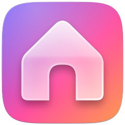
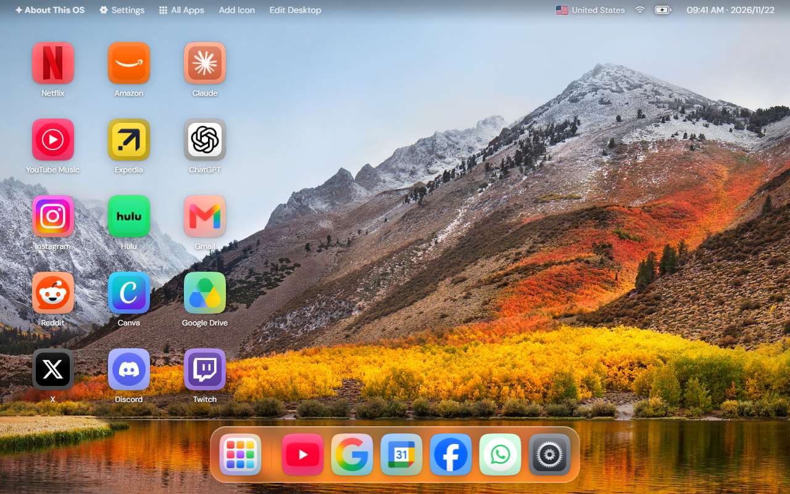

Home Page OSA new era of web browsing.
Syncs with your browser’s Bookmarks bar: folders become app categories, links become icons. Change a bookmark, and the desktop follows.
No account · Nothing leaves your browser

Synced from your